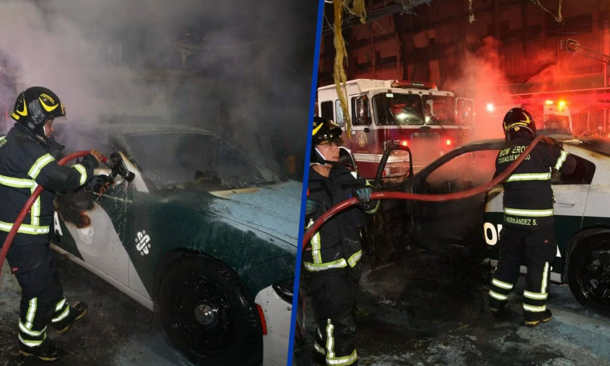

17 de Noviembre
Un ataque en el Metro CDMX se registró la tarde del 19 de noviembre en la estación Tacubaya de la Línea 7, donde un sujeto agredió a 4 personas que terminaron apuñaladas.
En torno al ataque en Metro CDMX en el que un individuo que ya fue detenido atacó con una arma blanca a 4 civiles, circula un video en el que se muestran los instantes en los que cometió la agresión. Pero, ¿qué pasó con las 4 personas apuñaladas en la estación Tacubaya de la Línea 7? Te contamos lo que se sabe en torno a las víctimas de la agresión cometida en el Metro CDMX.
Esto toda vez que el agresor, identificado como “Jimmy”, será procesado por las autoridades acusado por el delito de homicidio calificado en grado de tentativa en perjuicio de 4 víctimas.
Jimmy Arnulfo “N”, de 24 años de edad. fue vinculado a proceso por un Juez de Control ubicado en el Reclusorio Norte, luego de las pruebas en su contra que fueron presentadas por el propio STC Metro de CDMX. De acuerdo con el juzgador, el acusado es señalado por su responsabilidad en el delito de tentativa de homicidio, por el cual 4 personas resultaron gravemente heridas, y de las cuáles 2 de ellas continúan hospitalizadas. El juzgador puntualizó que dada la condición psiquiátrica que se le atribuye al agresor, Jimmy “N” será enviado a un Centro Varonil de Rehabilitación Psicosocial. Esto toda vez que los reportes señalan que sus actos fueron cometidos durante un ataque de esquizofrenia, el cual se combinó con el consumo de diversas sustancias ilícitas. El juez ordenó también un periodo de 4 meses para que sea entregada la investigación complementaria contra el agresor.
18 de Noviembre
Tráfico en CDMX: Se espera caos por marchas y bloqueos este 18 de noviembre en la capital

Ciudad de México.- Este lunes se espera tráfico en CDMX, para este 18 de noviembre las afectaciones serán debido a las diferentes marchas, bloqueos y movilizaciones que se tienen programadas durante el día, así como plantones en diferentes puntos de la capital. Es por ello que las autoridades de la Ciudad de México recomiendan a los automovilistas tomes precauciones necesarias para no quedar varados en los embotellamientos, así como utilizar alternativas viales.
En ese sentido, el Frente Popular de la Montaña Alta de Guerrero se manifestará en la Secretaría de Gobernación (SEGOB), en Abraham González No. 48, Col. Juárez, Alc. Cuauhtémoc. Exigen seguimiento al caso de desaparición forzada y asesinato del defensor de Derechos Humanos de los pueblos indígenas de la región de la Montaña de Guerrero, ocurrida el día 11 de octubre de 2019 en Tlapa de Comonfort.
Por otro lado, en la Miguel Hidalgo el grupo Siembra Cultura A.C. se concentrará en punto de las 09:00 horas en la Explanada de la Estela de Luz, ubicada en calle Lieja No. 270, Bosque de Chapultepec 1ª Sección, Alc. Miguel Hidalgo. Los asistentes realizarán una mesa lúdica y una protesta pacífica para dar a conocer el uso responsable y la tolerancia a los usuarios de cannabis. NO se esperan afectaciones a la circulación.
Asimismo, Habitante del Municipio de Huetamo, Estado de Michoacán se manifestará en los Arcos del Edificio de Gobierno de la Ciudad de México, ubicados en Plaza de la Constitución No. 1, Col. Centro Histórico, Alc. Cuauhtémoc. Se manifestará por las amenazas a su persona y a su familia. No se espera afectaciones a la circulación o algún tipo de acción, pero se mantendrá la presencia policiaca en el punto.
Finalmente, el Frente Oriente se manifestará sobre Av. Paseo de la Reforma No. 211, 213, Col. Cuauhtémoc, Alc. Cuauhtémoc. Exigen la libertad del dirigente de la UPVA y la presentación con vida de los 43 normalistas desaparecidos de Ayotzinapa. De esta manera, se esperan algunas manifestaciones durante este 18 de noviembre en la capital, aunque no se esperan mayyores afectaciones.
19 de Noviembre
Detienen a tres hombres en Tepito; a dos por posesión de drogas y a uno por incendiar patrulla para evitar captura

Un hombre incendió intencionalmente una patrulla de la Secretaría de Seguridad Ciudadana (SSC) en el barrio de Tepito, en la alcaldía Cuauhtémoc, en un intento por salvar a dos presuntos narcomenudistas; sin embargo, los tres fueron detenidos. Todo comenzó cuando las autoridades vieron a dos sujetos manipulando una serie de envoltorios y, tras una revisión preventiva, los oficiales se diero cuenta que los hombres poseían alrededor de 80 bolsitas de plástico con aparente marihuana. Los oficiales arrestaron a los hombres en la esquina del Eje 1 Norte y la calle Jesús Carranza, cuando un sujeto metió un objeto dentro de una patrulla, la cual comenzó a incendiarse. Varias personas salieron de un inmueble para evitar que los oficiales arrestaran a los hombres; sin embargo, a través de la frecuencia de radio, los oficiales solicitaron el apoyo de otros equipos de trabajo.
Rápidamente los uniformados utilizaron extintores y solicitaron la presencia del personal del Heroico Cuerpo de Bomberos qué llegó al sitio, controló el fuego en el vehículo y realizó labores de enfriamiento.
“Posteriormente, a través de un cerco virtual realizado por los monitoristas del Centro de Comando y Control (C2) Centro, indicaron que el probable responsable (del incendio de a patrulla) se encontraba en la calle de Jesús Carranza y Libertad, donde los efectivos policiales le dieron alcance y detuvieron", detalló la Secretaría de Seguridad Ciudadana de la CDMX en un comunicado. Luego de tomar el control de la situación, los dos hombres, de 26 años, fueron detenidos, informados de sus derechos de ley y trasladados ante el agente del Ministerio Público correspondiente quien se encargará de definir su situación legal. En tanto, el hombre de 29 años, quien incendió el vehículo, cuenta con cuatro ingresos al Sistema Penitenciario por Delitos contra la salud y robo, por lo que también quedó a disposición del agente del Ministerio Público para que determine su situación jurídica.
20 de Noviembre
Sujeto sube a techo de tren en la línea A del metro; fue detenido
SSC contuvieron al hombre de 45 años de edad a quien le hallaron un cuchillo y una bolsa con marihuana
La Secretaría de Seguridad Ciudadana (SSC) de la Ciudad de México arrestó a un hombre, aparentemente en situación vulnerable, que trepó a la barda perimetral y al techo de un vagón en la estación Guelatao de la Línea A del Metro. Según un comunicado, los oficiales asignados a la estación notaron a una persona en la parte superior de la barda perimetral, por lo que notificaron al Jefe de Estación para suspender el suministro de energía y detener el tren.
Los oficiales salieron a la avenida y con apoyo de policías sectoriales realizaron labores de vialidad, mientras que entablaron un diálogo de confianza, sin embargo, el hombre subió al techo del vagón. Luego de unos minutos, contuvieron al hombre de 45 años de edad, en aparente situación vulnerable, y en una revisión le hallaron un cuchillo, así como una bolsa con aproximadamente 200 gramos de marihuana. El sujeto fue puesto a disposición del agente del Ministerio Público correspondiente quien definirá su situación jurídica; en tanto, se reanudaron las operaciones del Metro.
21 de Noviembre
Diputados aprueban en lo general y particular "Súper Secretaría" de Harfuch
Es oficial, tras sesionar, la Cámara de Diputados aprobó en lo general y particular la conocida como “Súper Secretaría” de García Harfuch con 441 votos a favor, 0 en contra y 0 abstenciones.
¿En qué consiste la “Súper Secretaría” de Harfuch?
De acuerdo con la Nota Legislativa No. 160 , el objetivo es reforzar las atribuciones y capacidades que tiene para proteger a la población, además de buscar reducir la criminalidad. La iniciativa permitiría a García Harfuch perseguir delitos utilizando inteligencia policial y tecnologías avanzadas. Además, se le asignaría el liderazgo de la Estrategia Nacional de Seguridad y la autoridad para asumir el control de las policías locales con el fin de judicializar casos. Entre las facultades que tendrá están los siguientes puntos:
- Investigar delitos bajo el mando del ministerio público.
- Coordinar y dirigir la Estrategia Nacional de Seguridad Pública, así como los programas, políticas y acciones respectivos.
- Auxiliar a la Presidenta de la República en el ejercicio de las funciones en materia de seguridad nacional.
- Dirigir y operar el sistema nacional de inteligencia en materia de seguridad pública.
- Coordinar acciones de seguridad pública entre los tres niveles de gobierno.
- Solicitar información a las autoridades locales para la identificación y esclarecimiento de los hechos presuntamente constitutivos de delitos.
22 de Noviembre
Se espera frío gélido hoy 22 de noviembre del 2024
¡A sacar bufanda y guantes! El pronóstico del clima para hoy en las alcaldías de la CDMX será de frío y niebla las primeras horas
Las temperaturas mínimas para este 22 de noviembre del 2024 en la CDMX se esperan a las 7 de la mañana de hasta 9 grados centígrados y las máximas entre 4 y 5 de la tarde de hasta 21 grados centígrados.
El pronóstico del clima en México hoy 22 de noviembre del 2024, se espera que el fin de semana se registren bajas temperaturas durante las mañanas y noches, en los estados del noroeste, norte, occidente, centro y occidente. La masa de aire frío asociada al frente núm. 10 modificará sus características térmicas, y provocará un asenso de temperaturas diurnas en el noroeste, norte, noreste, centro y oriente del país, aunque para la mañana y la noche el ambiente seguirá siendo frío a muy frío en esas mismas regiones.
Se esperan bancos de niebla en zonas de valle y la posibilidad de heladas en zonas altas, además de ambiente gélido en las zonas montañosas de Chihuahua y Durango Habrá una disminución del potencial de lluvia en gran parte del país, y viento de componente norte con rachas de 70 a 90 km/h en el istmo y golfo de Tehuantepec, y con rachas de 40 a 60 km/h en las costas de Yucatán y Quintana Roo.
Habrá lluvias puntuales fuertes en Guerrero y Chiapas; intervalos de chubascos en Jalisco, Colima, Michoacán, Oaxaca, Veracruz, Tabasco y la Península de Yucatán; y lluvias aisladas en Puebla, debido al ingreso de humedad del Pacífico, golfo de México y Mar Caribe.
¿En qué estados de México hará más frío?
- Temperaturas máximas de 35 a 40 °C: Sinaloa, Nayarit, Jalisco, Colima y Michoacán.
- Temperaturas máximas de 30 a 35 °C: Baja California Sur, Sonora (sur), Morelos, Guerrero y Oaxaca (costa).
- Temperaturas mínimas de -10 a -5 °C con heladas para la madrugada del sábado:zonas serranas de Baja California, Chihuahua y Durango.
- Temperaturas mínimas de -5 a 0 °C con heladas para la madrugada del sábado: zonas montañosas de Sonora, Zacatecas, Aguascalientes, Jalisco, Michoacán, Guanajuato, Querétaro, Hidalgo, Veracruz, Puebla, Tlaxcala y Estado de México.
- Temperaturas mínimas de 0 a 5 °C para la madrugada del sábado: zonas montañosas de Ciudad de México, Morelos, Oaxaca y Chiapas.
23 de Noviembre
Metro CDMX: qué pasa en la Línea B, sábado 23 de noviembre 2024